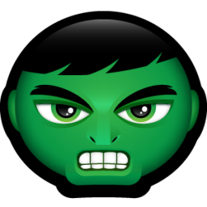

Historia
Loki enviou um pedido de socorro para Thor, que também foi recebido pelo Homem-Formiga, a Vespa e o Homem de Ferro. Após derrotarem Loki, o Homem-Formiga conclui que os cinco trabalharam bem juntos e sugeriu que eles formassem uma força conjunta. A Vespa nomeou o grupo e assim nasciam Os Vingadores.
Membros
Homem de Ferro

Tony Stark é um industrial bilionário e inventor brilhante que realiza testes bélicos no exterior, mas é sequestrado por terroristas que o forçam a construir uma arma devastadora. Em vez disso, ele constrói uma armadura blindada e enfrenta seus sequestradores. Ao voltar para os EUA, Stark aprimora a armadura e a utiliza para combater o crime.
Capitao America

Steve Rogers é um jovem que participa de experiências visando a criação do supersoldado americano. Quando os oficiais militares conseguem transformá-lo em uma arma humana, eles percebem que não podem arriscar a vida do jovem nas batalhas de guerra.
Hulk
Bruce Banner é um cientista e trabalha ao lado de sua grande paixão, a bela Betty Ross, em um projeto que envolve a reconstituição de tecidos com a utilização da radiação gama. O problema todo começa quando, após ter seus genes alterados por um acidente envolvendo a radiação gama, Bruce Banner passa a se transformar em um ser gigantesco e verde que expressa no corpo todos os seus demônios mais íntimos e pessoais.
Thor

Como filho de Odin, rei dos deuses nórdicos, Thor logo herdará o trono de Asgard de seu idoso pai. Porém, no dia de sua coroação, Thor reage com brutalidade quando os inimigos dos deuses entram no palácio violando o tratado. Como punição, Odin manda Thor para a Terra. Enquanto seu irmão Loki conspira em Asgard, Thor, agora sem seus poderes, enfrenta sua maior ameaça.